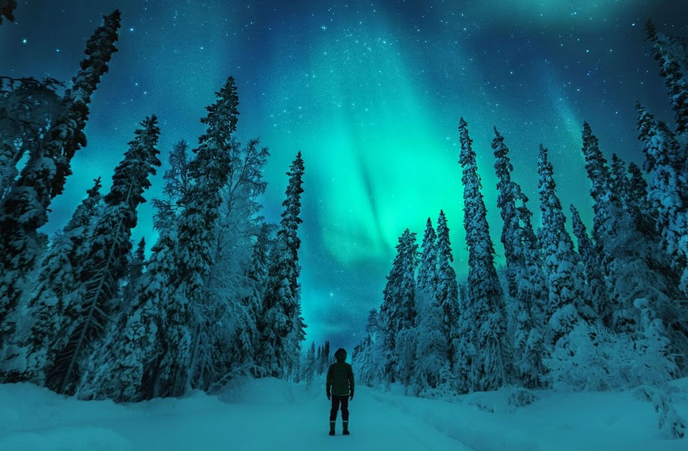

The Northern Lights
THE OTHERWORLDLY AURORA borealis, or northern lights, begin high in the Earth’s atmosphere—at altitudes from 60 to more than 250 miles— when charged particles from the sun become trapped in the Earth's magnetic field. The result is a colorful, dancing light show.

THE OTHERWORLDLY
AURORA borealis, or northern
lights, begin high in the Earth’s
atmosphere—at altitudes from
60 to more than 250 miles—
when charged particles from the
sun become trapped in the
Earth's magnetic field. The result
is a colorful, dancing light show.
The first time I filmed an aurora was from an icebreaker near Antartica. Luckily there are much more accesible places if you'ld like to take in this light shows yourself. For the best seats to this celestial scene, consider anywhere with a magnetic latitude above 55' and low light polution. Find your magnetic latitude on NOAA and here.
In the popular latitudes, auroras can appear on any dark night. Long winter nights are good but not necesarily the best time. Near equionxes in march and september the earth's magnetic field lets more solar particles interact with the atmosphere, creating aurora sesions! I suggest autmnal equinox in september, when there are pleasent temperatures in polar latitudes. Find the dark hours of your location here, or by using guide app.